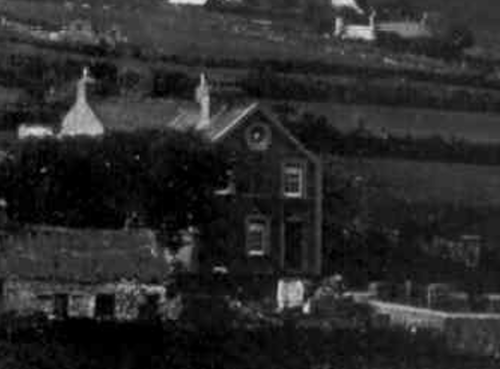

Plas
Yn ôl y sôn roedd Plas yn dafarn yr un fath â’r Fic – y Victoria Inn. Erstalwm roedd yr hen selar yn dal i’w gweld o dan yr adeilad presennol. Yn ddiweddarach byddai Margiad Plas yn gwerthu llefrith a byddai trigolion y pentref yn mynd yno efo piser. Yn 1841 roedd Thomas Jones yn byw yn Plas ac roedd yn deiliwr.
Yn ôl Dewi Williams, Brynmor, roedd Plas yn dafarn debyg i’r Fic – y Victoria Inn, ar un adeg. Mae Lois Elis yn cofio’r hen selar o dan yr hen Blas. Yn ôl Lois a Gwyn Elis, Plas, arferai Margiad Plas werthu llefrith yn Plas a byddai’r pentrefwyr yn mynd yno efo piser.
